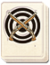

Basic Unit Statistics (can be modified by difficulty level, arts, skills, traits and retainers)
| Recruitment Cost | 150 | |
| Upkeep Cost | 50 | |
| Marines | 30 | 25% |
| Seamen | 5 | 2% |
| Hull Strength | 100 | 1% |
| Morale | 12 | 24% |
Strengths & Weaknesses
- Fast moving.
- Matchlocks deadly against crew and can also damage hull.
- Vulnerable if boarded.
- Crew very exposed to missiles.
Abilities
- Battle Speed - This increases a ship's rowing speed for a short period of time.
Requires
- Buildings:

- Arts: 
Description
This light ship only carries a small number of warriors each armed with a deadly matchlock arquebus.
A matchlock ship carries a small detachment of musket-armed soldiers, certainly not enough to fend off a boarding action. Further, because the upper deck has no cover, they are exposed to missile attacks. However, this lack of fighting manpower and protection also makes the ship very light and fast. The matchlock troops can fire at an enemy crew or at the side of an enemy ship in an attempt to hole it. If a heavy enemy vessel gets too close and a boarding attack looks likely, a matchlock ship can use speed to move out of trouble and continue its harassing attacks. Historically, Japanese naval tactics used missile attacks to thin out enemy numbers before a boarding action. Once the enemy were reduced, an attack would be launched and a battle fought hand-to-hand just as if everyone was ashore. The arrival of firearms in the Sengoku Jidai did not change these tactics. Instead, the arquebus simply replaced the bow.